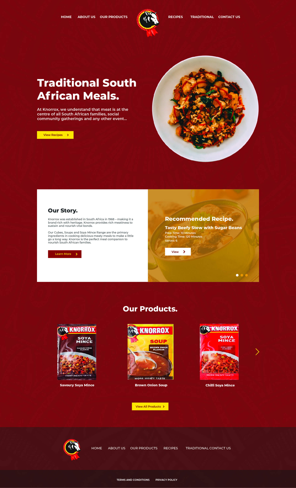
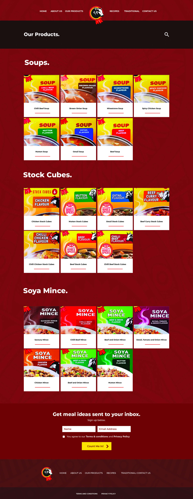

Knorrox Website UI
The objective was to give the website a facelift using the same content but to completely change the look and feel and dedicate more attention to bringing the brand to the forefront.
Information Architecture + App Wireframes + App UI Design + Competitor research

Layout.
To allow for increased visibility of the brand and to keep the content simplified, an increase in "white space" was used. This allowed for segmentation of content using space and text.
